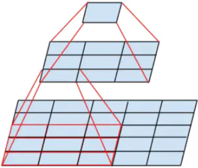
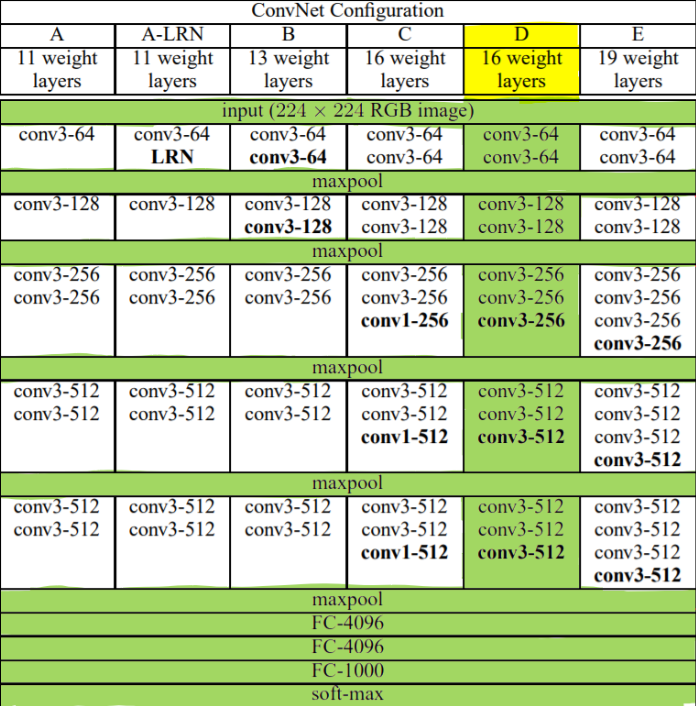
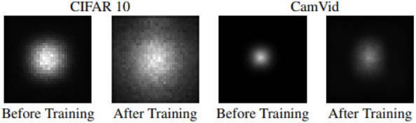
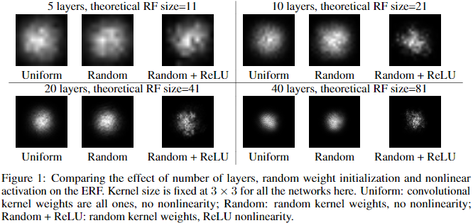

感受野（Receptive Filed, RF）
由于卷积层是一种局部连接操作，对于卷积层的输入和输出，在输出的特征图上，一个像素的值，只取决于输入特征图上的一部分区域，如图所示：

感受野的大小
从原始输入图像开始，如果第一层卷积的卷积核是$3\times 3$大小，那么第一层卷积层的输出特征图上，左上角第一个像素点连接了原始输入图像左上角的$3\times3$大小的范围（这个范围被称作这个像素对于输入图像的感受野），即这个特征图上，每个像素对于输入图像的的感受野大小是$3\times 3$，如果第二层卷积也是$3\times 3$大小的卷积核，那么第二层输出的特征图上的一个像素对于第一层输出的特征图的感受野是$3\times 3$，但是对应到原图上的感受野大小和范围就要依赖于第一层卷积层的卷积步长参数了，如果第一层卷积的卷积步长为1，那么可以得出第二层输出的特征图上，一个像素对应于原始输入图像上$5\times 5$的区域，即这层特征图上每个像素对于输入图像的感受野大小是$5\times 5$。
对于特征图上的一个像素，其感受野之外的区域不影响该像素的值，因此对于该像素，不能从其值上获取其感受野之外的信息。
感受野的步长
从原始输入图像开始，如果第一层卷积的卷积核是$3\times 3$大小，卷积步长是1，那么在第一层卷积层的输出特征图上坐标为$(0, 0)$的第一个像素的感受野是输入图像的左上角从$(0,0)$坐标开始的$3\times 3$的区域，而第一层卷积层的输出特征图上坐标为$(0, 1)$的像素则对应输入图像的左上角从$(0,1)$坐标开始的$3\times 3$的区域，这两个区域之间的步长为1，也称为第一层卷积层的输出特征图对于输入图像的感受野步长为1。
感受野的padding
感受野的padding和卷积层的padding是类似的，指的就是感受野分布在对应特征图上时，超出特征图的范围大小，这个是由于卷积层引入padding导致的。
感受野的理解
感受野可以理解为将信息经过的层合并成一个大核卷积层（虽然一个大卷积层不能完全实现多层堆叠的计算，例如其中包含了激活、池化等层，但是在感受野大小、步长、padding方面是等效的），其中卷积核大小就是感受野大小，卷积步长就是感受野步长。
感受野大小和步长的计算
一个适合口算的方式是从后往前计算，假设现在要计算第$i+m$层的输出特征图对于第$i$层特征图的感受野大小和步长，那么首先看第$i+m$层的输出特征图对于第$i+m-1$层的输出特征图的感受野大小和步长。
这里只考虑卷积核大小和步长在长宽上相同的情况，否则的话，需要按照长宽分别计算，记第$n$层输出特征图对于第$m$层输出特征图的感受野大小为$F^n_m$，感受野步长为$S^n_m$，感受野padding记为$P^n_m$，如果第$i$层是卷积层，则记其卷积核大小为$k_i$，记其卷积步长为$s_i$，记padding大小为$p_i$，如果第$i$层是池化层，则同样记其池化核大小为$k_i$，记其池化步长为$s_i$，记padding大小为$p_i$，那么不论对池化层还是卷积层，很显然有：
VGG模型的配置如图所示：

这里以VGG-16为例，其中的卷积层全是卷积核大小为3，卷积步长为1，padding为1，其中的池化层全是池化核大小为2，池化步长为2，padding为0，记第四个maxPooling之前的特征图即Conv4-3为第13层的输出，记输入的$224\times 224$大小的图片为第0层的输出。
这里尝试计算$F^{13}_0$, $S^{13}_0$, $P^{13}_0$:
即Conv4-3的输出特征图上，每个像素的感受野在原始输入图片上的大小是92，padding 42，步长为8的分布，因为Conv4-3的输出特征图大小是$28\times 28$，所以一共有$28\times 28$个感受野，按照这个排列，其一行所占的像素可以计算为$92 + (28 - 1) \times 8 = 308$正好等于$224 + 2 \times 42$。
对于ResNet、Inception这种包含多个路径模型来说，其某一层的感受野，应该取其中感受野最大的路径来计算。
空洞卷积（Dialated Convolution）有助于增加感受野，可以将其卷积核看做一个填充了0值的大卷积核。
有效感受野（Efficient Receptive Filed）
一个特征图上某个像素的感受野虽然可以反应哪些位置可以影响该像素的值，但是在其感受野中，不同区域的影响程度是不一样的，论文《Understanding the Effective Receptive Field in Deep Convolutional Neural Networks》中讨论了这个问题，论文中指出，如果卷积核全都初始化为相同的值，那么感受野中的原图像素对于特征像素的影响大小成正态分布，这取决于中间的卷积核权重，并在模型训练前后会发生变化，如图所示，其中越亮的区域代表有越大的影响。

基于这个现象，论文中提出了有效感受野的概念，即真正能影响特征图像素值的范围只占理论感受野的一小部分。
从上图中可以看出，即使在训练完成之后，有效感受野也不能铺满整个理论感受野范围，因此在设计模型时，还需要让感受野超出目标大小，否则很难提取到完整的目标信息。
根据论文中给出的示意图，不同的初始化方式对有效感受野有一些影响，随着层数加深，理论感受野增大，有效感受野占理论感受野的比重越来越小。

为了使得感受野中的影响分布更加均匀，论文中提出加大卷积核边缘权重，减少卷积核中心权重的初始化方式。